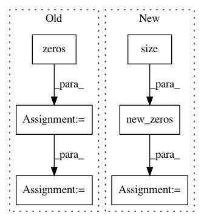

e60669c5aa467d5c11a508c01b37c4ed8e352fa6,torch_geometric/nn/conv/supergat_conv.py,SuperGATConv,forward,#SuperGATConv#Any#Any#Any#Any#,159
Before Change
// X, Y for the self-supervised task
self.att_with_neg_edges = att_with_neg_edges
num_neg_edges = att_with_neg_edges.size(0)
att_label = torch.zeros(num_neg_edges).float().to(x.device)
att_label[:pos_edge_index.size(1)] = 1.
self.att_label = att_label
if self.concat is True:
out = out.view(-1, self.heads * self.out_channels)
else:
After Change
)
self.att_x = torch.cat([pos_att, neg_att], dim=0)
self.att_y = self.att_x.new_zeros(self.att_x.size(0))
self.att_y[:pos_edge_index.size(1)] = 1.
if self.concat is True:
out = out.view(-1, self.heads * self.out_channels)
In pattern: SUPERPATTERN
Frequency: 3
Non-data size: 6
Instances
Project Name: rusty1s/pytorch_geometric
Commit Name: e60669c5aa467d5c11a508c01b37c4ed8e352fa6
Time: 2021-02-15
Author: matthias.fey@tu-dortmund.de
File Name: torch_geometric/nn/conv/supergat_conv.py
Class Name: SuperGATConv
Method Name: forward
Project Name: elbayadm/attn2d
Commit Name: 27568a7ebed1a35f08ac0390f35b3de9b8dad0dd
Time: 2019-11-13
Author: myleott@fb.com
File Name: fairseq/models/levenshtein_transformer.py
Class Name: LevenshteinTransformerModel
Method Name: initialize_output_tokens